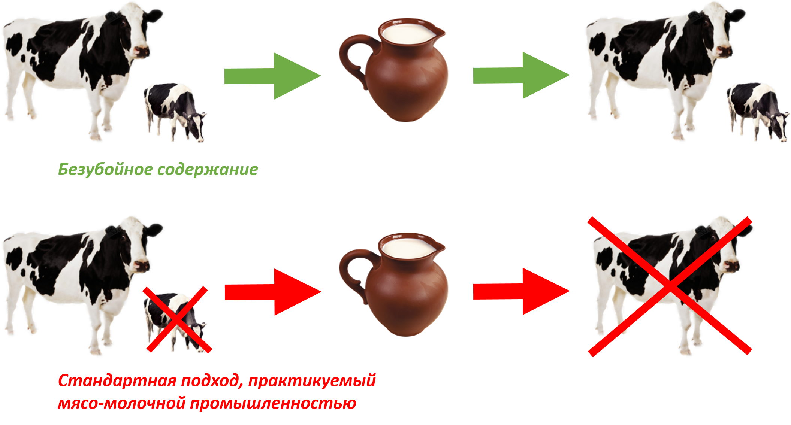

Контакты ферм-приютов, занимающихся защитой коров
Вы можете сдать коров и телят в данные приюты, или договориться об их выкупе у вас.
Ферма «Бхуми»
Украина, Николаевская область, с. Безводное
Руководитель: Олег Манилюк
Телефон: +38 066 700 56 29
http://www.bhumy.org
http://www.bhumy.net
Руководитель: Олег Манилюк
Телефон: +38 066 700 56 29
http://www.bhumy.org
http://www.bhumy.net
Ферма «Гопал»

Украина, Днепропетровская область,
Царичанский район, с. Цыбульковка
Руководитель: Андрей Быков
Телефон. +38 096 805 55 98
https://www.facebook.com/fermagopal/
Царичанский район, с. Цыбульковка
Руководитель: Андрей Быков
Телефон. +38 096 805 55 98
https://www.facebook.com/fermagopal/
Безубойная модель получения молока

Представленная на схеме безубойная модель, реализована вышеупомянутыми фермами «Гопал» и «Бхуми».
Все коровы на этих фермах доживают до своей естественной смерти, получая заботу и уход. Рождающиеся телята не попадают к мясникам. Они остаются с матерью, получая от нее любовь и заботу, а так же необходимое для них количество молока. Телят мужского пола так же не убивают. Они вырастают и помогают вспахивать землю.
Излишки молока распространяются людям, как этичная безубойная молочная продукция, пользующаяся спросом у осознанных вегетарианцев, видящих отличие такого молока, от молока, которое дает мясо-молочная промышленность.
Данные фермы-приюты так же занимаются выкупом коров и телят у хозяев, которые собираются продать их на убой мясникам.